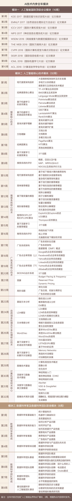

- 000 开篇词 你的360度人工智能信息助理.md
- 001 聊聊2017年KDD大会的时间检验奖.md
- 002 精读2017年KDD最佳研究论文.md
- 003 精读2017年KDD最佳应用数据科学论文.md
- 004 精读2017年EMNLP最佳长论文之一.md
- 005 精读2017年EMNLP最佳长论文之二.md
- 006 精读2017年EMNLP最佳短论文.md
- 007 精读2017年ICCV最佳研究论文.md
- 008 精读2017年ICCV最佳学生论文.md
- 009 如何将深度强化学习应用到视觉问答系统？.md
- 010 精读2017年NIPS最佳研究论文之一：如何解决非凸优化问题？.md
- 011 精读2017年NIPS最佳研究论文之二：KSD测试如何检验两个分布的异同？.md
- 012 精读2017年NIPS最佳研究论文之三：如何解决非完美信息博弈问题？.md
- 013 WSDM 2018论文精读：看谷歌团队如何做位置偏差估计.md
- 014 WSDM 2018论文精读：看京东团队如何挖掘商品的替代信息和互补信息.md
- 015 WSDM 2018论文精读：深度学习模型中如何使用上下文信息？.md
- 016 The Web 2018论文精读：如何对商品的图片美感进行建模？.md
- 017 The Web 2018论文精读：如何改进经典的推荐算法BPR？.md
- 018 The Web 2018论文精读：如何从文本中提取高元关系？.md
- 019 SIGIR 2018论文精读：偏差和流行度之间的关系.md
- 020 SIGIR 2018论文精读：如何利用对抗学习来增强排序模型的普适性？.md
- 021 SIGIR 2018论文精读：如何对搜索页面上的点击行为进行序列建模？.md
- 022 CVPR 2018论文精读：如何研究计算机视觉任务之间的关系？.md
- 023 CVPR 2018论文精读：如何从整体上对人体进行三维建模？.md
- 024 CVPR 2018论文精读：如何解决排序学习计算复杂度高这个问题？.md
- 025 ICML 2018论文精读：模型经得起对抗样本的攻击？这或许只是个错觉.md
- 026 ICML 2018论文精读：聊一聊机器学习算法的公平性问题.md
- 027 ICML 2018论文精读：优化目标函数的时候，有可能放大了不公平？.md
- 028 ACL 2018论文精读：问答系统场景下，如何提出好问题？.md
- 029 ACL 2018论文精读：什么是对话中的前提触发？如何检测？.md
- 030 ACL 2018论文精读：什么是端到端的语义哈希？.md
- 030 复盘 7 一起来读人工智能国际顶级会议论文.md
- 031 经典搜索核心算法：TF-IDF及其变种.md
- 032 经典搜索核心算法：BM25及其变种（内附全年目录）.md
- 033 经典搜索核心算法：语言模型及其变种.md
- 034 机器学习排序算法：单点法排序学习.md
- 035 机器学习排序算法：配对法排序学习.md
- 036 机器学习排序算法：列表法排序学习.md
- 037 查询关键字理解三部曲之分类.md
- 038 查询关键字理解三部曲之解析.md
- 039 查询关键字理解三部曲之扩展.md
- 040 搜索系统评测，有哪些基础指标？.md
- 041 搜索系统评测，有哪些高级指标？.md
- 042 如何评测搜索系统的在线表现？.md
- 043 文档理解第一步：文档分类.md
- 044 文档理解的关键步骤：文档聚类.md
- 045 文档理解的重要特例：多模文档建模.md
- 046 大型搜索框架宏观视角：发展、特点及趋势.md
- 047 多轮打分系统概述.md
- 048 搜索索引及其相关技术概述.md
- 049 PageRank算法的核心思想是什么？.md
- 050 经典图算法之HITS.md
- 052 机器学习排序算法经典模型：RankSVM.md
- 053 机器学习排序算法经典模型：GBDT.md
- 054 机器学习排序算法经典模型：LambdaMART.md
- 055 基于深度学习的搜索算法：深度结构化语义模型.md
- 056 基于深度学习的搜索算法：卷积结构下的隐含语义模型.md
- 057 基于深度学习的搜索算法：局部和分布表征下的搜索模型.md
- 057 复盘 1 搜索核心技术模块.md
- 058 简单推荐模型之一：基于流行度的推荐模型.md
- 059 简单推荐模型之二：基于相似信息的推荐模型.md
- 060 简单推荐模型之三：基于内容信息的推荐模型.md
- 061 基于隐变量的模型之一：矩阵分解.md
- 062 基于隐变量的模型之二：基于回归的矩阵分解.md
- 063 基于隐变量的模型之三：分解机.md
- 064 高级推荐模型之一：张量分解模型.md
- 065 高级推荐模型之二：协同矩阵分解.md
- 066 高级推荐模型之三：优化复杂目标函数.md
- 067 推荐的Exploit和Explore算法之一：EE算法综述.md
- 068 推荐的Exploit和Explore算法之二：UCB算法.md
- 069 推荐的Exploit和Explore算法之三：汤普森采样算法.md
- 070 推荐系统评测之一：传统线下评测.md
- 071 推荐系统评测之二：线上评测.md
- 072 推荐系统评测之三：无偏差估计.md
- 073 现代推荐架构剖析之一：基于线下离线计算的推荐架构.md
- 074 现代推荐架构剖析之二：基于多层搜索架构的推荐系统.md
- 075 现代推荐架构剖析之三：复杂现代推荐架构漫谈.md
- 076 基于深度学习的推荐模型之一：受限波兹曼机.md
- 077 基于深度学习的推荐模型之二：基于RNN的推荐系统.md
- 078 基于深度学习的推荐模型之三：利用深度学习来扩展推荐系统.md
- 078 复盘 2 推荐系统核心技术模块.md
- 079 广告系统概述.md
- 080 广告系统架构.md
- 081 广告回馈预估综述.md
- 082 Google的点击率系统模型.md
- 083 Facebook的广告点击率预估模型.md
- 084 雅虎的广告点击率预估模型.md
- 085 LinkedIn的广告点击率预估模型.md
- 086 Twitter的广告点击率预估模型.md
- 087 阿里巴巴的广告点击率预估模型.md
- 088 什么是基于第二价位的广告竞拍？.md
- 089 广告的竞价策略是怎样的？.md
- 090 如何优化广告的竞价策略？.md
- 091 如何控制广告预算？.md
- 092 如何设置广告竞价的底价？.md
- 093 聊一聊程序化直接购买和广告期货.md
- 094 归因模型：如何来衡量广告的有效性.md
- 095 广告投放如何选择受众？如何扩展受众群？.md
- 096 复盘 4 广告系统核心技术模块.md
- 096 如何利用机器学习技术来检测广告欺诈？.md
- 097 LDA模型的前世今生.md
- 098 LDA变种模型知多少.md
- 099 针对大规模数据，如何优化LDA算法？.md
- 100 基础文本分析模型之一：隐语义分析.md
- 101 基础文本分析模型之二：概率隐语义分析.md
- 102 基础文本分析模型之三：EM算法.md
- 103 为什么需要Word2Vec算法？.md
- 104 Word2Vec算法有哪些扩展模型？.md
- 105 Word2Vec算法有哪些应用？.md
- 106 序列建模的深度学习利器：RNN基础架构.md
- 107 基于门机制的RNN架构：LSTM与GRU.md
- 108 RNN在自然语言处理中有哪些应用场景？.md
- 109 对话系统之经典的对话模型.md
- 110 任务型对话系统有哪些技术要点？.md
- 111 聊天机器人有哪些核心技术要点？.md
- 112 什么是文档情感分类？.md
- 113 如何来提取情感实体和方面呢？.md
- 114 复盘 3 自然语言处理及文本处理核心技术模块.md
- 114 文本情感分析中如何做意见总结和搜索？.md
- 115 什么是计算机视觉？.md
- 116 掌握计算机视觉任务的基础模型和操作.md
- 117 计算机视觉中的特征提取难在哪里？.md
- 118 基于深度学习的计算机视觉技术（一）：深度神经网络入门.md
- 119 基于深度学习的计算机视觉技术（二）：基本的深度学习模型.md
- 120 基于深度学习的计算机视觉技术（三）：深度学习模型的优化.md
- 121 计算机视觉领域的深度学习模型（一）：AlexNet.md
- 122 计算机视觉领域的深度学习模型（二）：VGG & GoogleNet.md
- 123 计算机视觉领域的深度学习模型（三）：ResNet.md
- 124 计算机视觉高级话题（一）：图像物体识别和分割.md
- 125 计算机视觉高级话题（二）：视觉问答.md
- 126 计算机视觉高级话题（三）：产生式模型.md
- 126复盘 5 计算机视觉核心技术模块.md
- 127 数据科学家基础能力之概率统计.md
- 128 数据科学家基础能力之机器学习.md
- 129 数据科学家基础能力之系统.md
- 130 数据科学家高阶能力之分析产品.md
- 131 数据科学家高阶能力之评估产品.md
- 132 数据科学家高阶能力之如何系统提升产品性能.md
- 133 职场话题：当数据科学家遇见产品团队.md
- 134 职场话题：数据科学家应聘要具备哪些能力？.md
- 135 职场话题：聊聊数据科学家的职场规划.md
- 136 如何组建一个数据科学团队？.md
- 137 数据科学团队养成：电话面试指南.md
- 138 数据科学团队养成：Onsite面试面面观.md
- 139 成为香饽饽的数据科学家，如何衡量他们的工作呢？.md
- 140 人工智能领域知识体系更新周期只有5～6年，数据科学家如何培养？.md
- 141 数据科学家团队组织架构：水平还是垂直，这是个问题.md
- 142 数据科学家必备套路之一：搜索套路.md
- 143 数据科学家必备套路之二：推荐套路.md
- 144 数据科学家必备套路之三：广告套路.md
- 145 如何做好人工智能项目的管理？.md
- 146 数据科学团队必备的工程流程三部曲.md
- 147 数据科学团队怎么选择产品和项目？.md
- 148 曾经辉煌的雅虎研究院.md
- 149 微软研究院：工业界研究机构的楷模.md
- 150 复盘 6 数据科学家与数据科学团队是怎么养成的？.md
- 150 聊一聊谷歌特立独行的混合型研究.md
- 151 精读AlphaGo Zero论文.md
- 152 2017人工智能技术发展盘点.md
- 153 如何快速学习国际顶级学术会议的内容？.md
- 154 在人工智能领域，如何快速找到学习的切入点？.md
- 155 人工智能技术选择，该从哪里获得灵感？.md
- 156 内参特刊 和你聊聊每个人都关心的人工智能热点话题.md
- 156 近在咫尺，走进人工智能研究.md
- 结束语 雄关漫道真如铁，而今迈步从头越.md
032 经典搜索核心算法：BM25及其变种（内附全年目录）
周一我们讲了TF-IDF算法和它的四个变种，相对于TF-IDF而言，在信息检索和文本挖掘领域，BM25算法则更具理论基础，而且是工程实践中当仁不让的重要基线（Baseline）算法 。BM25在20世纪70年代到80年代被提出，到目前为止已经过去二三十年了，但是这个算法依然在很多信息检索的任务中表现优异，是很多工程师首选的算法之一。
今天我就来谈谈BM25算法的历史、算法本身的核心概念以及BM25的一些重要变种，帮助你快速掌握这个信息检索和文本挖掘的利器。
BM25的历史
BM25，有时候全称是Okapi BM25，是由英国一批信息检索领域的计算机科学家开发的排序算法。这里的“BM”是“最佳匹配”（Best Match）的简称。
BM25背后有两位著名的英国计算机科学家。第一位叫斯蒂芬·罗伯逊（Stephen Robertson）。斯蒂芬最早从剑桥大学数学系本科毕业，然后从城市大学（City University）获得硕士学位，之后从伦敦大学学院（University College London）获得博士学位。斯蒂芬从1978年到1998年之间在城市大学任教。1998年到2013年间在微软研究院剑桥实验室工作。我们之前提到过，美国计算机协会ACM现在每三年颁发一次“杰拉德·索尔顿奖”，用于表彰对信息检索技术有突出贡献的研究人员。2000年这个奖项颁给斯蒂芬，奖励他在理论方面对信息检索的贡献。BM25可谓斯蒂芬一生中最重要的成果。
另外一位重要的计算机科学家就是英国的卡伦·琼斯（Karen Spärck Jones）。周一我们在TF-IDF的文章中讲过。卡伦也是剑桥大学博士毕业，并且毕生致力于信息检索技术的研究。卡伦的最大贡献是发现IDF以及对TF-IDF的总结。卡伦在1988年获得了第二届“杰拉德·索尔顿奖”。
BM25算法详解
现代BM25算法是用来计算某一个目标文档（Document）相对于一个查询关键字（Query）的“相关性”（Relevance）的流程。通常情况下，BM25是“非监督学习”排序算法中的一个典型代表。
顾名思义，这里的“非监督”是指所有的文档相对于某一个查询关键字是否相关，这个信息是算法不知道的。也就是说，算法本身无法简单地从数据中学习到相关性，而是根据某种经验法则来“猜测”相关的文档都有什么特质。
那么BM25是怎么定义的呢？我们先来看传统的BM25的定义。一般来说，经典的BM25分为三个部分：
- 单词和目标文档的相关性
- 单词和查询关键词的相关性
- 单词的权重部分
这三个部分的乘积组成某一个单词的分数。然后，整个文档相对于某个查询关键字的分数，就是所有查询关键字里所有单词分数的总和。
我们先从第一部分说起，即单词和目标文档的相关性。这里相关性的基本思想依然是“词频”，也就是TF-IDF里面TF的部分。词频就是单词在目标文档中出现的次数。如果出现的次数比较多，一般就认为更相关。和TF-IDF不同，BM25最大的贡献之一就是挖掘出了词频和相关性之间的关系是非线性的，这是一个初看有违常理但细想又很有道理的洞察。
具体来说，每一个词对于文档相关性的分数不会超过一个特定的阈值。这个阈值当然是动态的，根据文档本身会有调整。这个特征就把BM25里的词频计算和一般的TF区分开了。也就是说，词频本身需要“标准化”（Normalization），要达到的效果是，某一个单词对最后分数的贡献不会随着词频的增加而无限增加。
那BM25里词频的标准化是怎么做的呢？就是某一个词的词频，除以这个词的词频加上一个权重。这个权重包含两个超参数（Hyper-parameter），这些超参数后期是可以根据情况手动调整的。这个做法在非监督的排序算法中很普遍。同时，这个权重还包括两个重要信息：第一，当前文档的长度；第二，整个数据集所有文档的平均长度。
这几个因素混合在一起，我们就得到了一个新的词频公式，既保证单词相对于文档的相关度和这个单词的词频呈现某种正向关系，又根据文档的相对长度，也就是原始长度和所有文档长度的一个比值关系，外加一些超参数，对词频进行了限制。
有了单词相对于文档的相关度计算公式作为基础，单词相对于查询关键字的相关度可以说是异曲同工。首先，我们需要计算单词在查询关键字中的词频。然后，对这个词频进行类似的标准化过程。
和文档的标准化过程唯一的区别，这里没有采用文档的长度。当然，对于查询关键字来说，如果需要使用长度，也应该是使用查询关键字的长度和平均长度。但是，根据BM25经典公式来说，这一部分并没有使用长度信息进行重新标准化。
接着我来谈谈最后一个部分，单词权重的细节，通常有两种选择。
第一种选择就是直接采用某种变形的IDF来对单词加权。一般来说，IDF就是利用对数函数（Log函数）对“文档频率”，也就是有多少文档包含某个单词信息进行变换。这里回顾一下周一讲的内容，IDF是“文档频率”的倒数，并且通过对数函数进行转换。如果在这里使用IDF的话，那么整个BM25就可以看作是一个某种意义下的TF-IDF，只不过TF的部分是一个复杂的基于文档和查询关键字、有两个部分的词频函数。
第二种单词的权重选择叫作“罗伯逊-斯巴克-琼斯”权重（Robertson-Spärck-Jones），简称RSJ值，是由计算机科学家斯蒂芬·罗伯逊和卡伦·琼斯合作发现。我们刚才讲过，这两位都是重要的信息检索学术权威。这个权重其实就是一个更加复杂版本的IDF。一个关键的区别是RSJ值需要一个监督信息，就是要看文档对于某个查询关键字是否相关，而IDF并不需要。
对比以上两种思路，在很多情况下，利用IDF来直接进行单词权重的版本更加普遍。如果在有监督信息的情况下，RSJ值也不失为一个很好的选择。
通过这里简单的介绍，我们可以很容易地发现，BM25其实是一个经验公式。这里面的每一个成分都是经过很多研究者的迭代而逐步发现的。很多研究在理论上对BM25进行了建模，从“概率相关模型”（Probabilistic Relevance Model）入手，推导出BM25其实是对某一类概率相关模型的逼近。对这一部分我在这里就不展开论述了。需要你记住的是，BM25虽然是经验公式，但是在实际使用中经常表现出惊人的好效果。因此，很有必要对这一类文档检索算法有所了解。
BM25算法变种
由于BM25的情况，一方面是经验公式，另一方面是某种理论模型的逼近，这样就出现了各式各样的BM25变种。这里我仅仅介绍一些有代表性的扩展。
一个重要的扩展是BM25F，也就是在BM25的基础上再多个“域”（Field）文档上的计算。这里“域”的概念可以理解成一个文档的多个方面。比如，对于很多文档来说，文档包括标题、摘要和正文。这些组成部分都可以认为是不同的“域”。那么，如何结合不同的“域”，让文档的相关性能够统一到一个分数上就是BM25F的核心内容。
具体来说，BM25F对于BM25的扩展很直观。那就是每一个单词对于文档的相关性是把各个域当做一个“小文档”的加权平均。也就是说，我们先把每个域当做单独的文档，计算词频，进行标准化。然后集合每个域的值，进行加权平均，再乘以词的权重（我们上面提到了，用IDF或者是RSJ值）。
另外一个重要的扩展就是把BM25和其他文档信息（非文字）结合起来。这个想法是在“学习排序”（Learning To Rank）这一思路出现以前的一种普遍的做法，往往就是用线性加权的形式直接把各种信息相结合。例如，在21世纪初期比较流行的做法是用BM25和PageRank的线性结合来确定网页的相关度。这里面，BM25是和某个查询关键字有联系的信息，而PageRank则是一个网页的总体权重。
小结
今天我为你讲了文档检索领域或者说搜索领域里最基本的一个技术：BM25。我们可以看到，BM25由三个核心的概念组成，包括词在文档中相关度、词在查询关键字中的相关度以及词的权重。BM25是一个长期积累的经验公式，也有很深的理论支持，是一个强有力的非监督学习方法的文本排序算法。
一起来回顾下要点：第一，简要介绍了BM25的历史。第二，详细介绍了BM25算法的三个主要组成部分。第三，简要地介绍了BM25的一些变种 。
最后，给你留一个思考题，虽然BM25是非监督的排序方法，并且我们提到其中有一些超参数，那么是否可以通过机器学习的手段来学习到这些超参数的最佳取值呢？

© 2019 - 2023 Liangliang Lee. Powered by gin and hexo-theme-book.